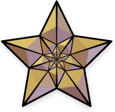

Not Logged in
Not Logged in

From J-pedia, the free encyclopedia
Featured content in J-pedia
Featured content represents the best of Wikipedia, including articles, pictures, and other contributions that showcase excellent results of the collaborative efforts of Wikipedia. All featured content undergoes a thorough review process to ensure that it meets the highest standards in order to serve as the best example of Wikipedia's end goals.
A small bronze star () in the top right corner of a desktop page indicates that the content is featured.
This page gives links to all of Wikipedia's featured content.
Featured Content: ←
Shortcut
Newest featured content edit
Articles
- Battle of Marshall's Elm
- Battle of the Defile
- Second Silesian War
- Aftermath (Rolling Stones album)
- 2019 Champion of Champions
- 1st Cavalry Division (Kingdom of Yugoslavia)
- "Drake Would Love Me"
- Donald Forrester Brown
- Margaret Macpherson Grant
- Australasian Antarctic Expedition
- Battle of Sluys
- Albany Charter half dollar
- James A. Ryder
- Francesco Caracciolo-class battleship
- The Goldfinch (painting)
Lists
- Isabelle Stevenson Award
- Hot Country Singles number ones of 1975
- England cricket team Test results (1960–1974)
- Champions League Twenty20 captains
- Robert Mitchum filmography
- Awards and nominations received by Game of Thrones
- Accolades received by Marvel's Spider-Man
- Hot Country Singles number ones of 1974
- Awards and nominations received by Santana
- Coleman Medal
- Barry Sheene Medal
- Awards and nominations received by Stranger Things
- First-class cricket quadruple centuries
- Christopher Nolan filmography
- Sussex Wildlife Trust
Topics
- Silesian Wars
- 1st Army Group (Kingdom of Yugoslavia)
- Nashville Sounds
- Overview of Margaret
- Battleships of Japan
- Ian Fleming's James Bond novels and short stories
- Crécy campaign
- RAAF area commands
- Jessica Chastain
- Gascon campaign of 1345
- Cleopatra
- Overview of Meghan Trainor
- Overview of Tove Lo
- Ivalice
- Padma Bhushan
Pictures
- Jaguar
- Bengal tiger
- Lion's mane jellyfish, expanding
- Lion's mane jellyfish, contracting
- Nemateleotris magnifica
- Gare du Nord
- Denis Mukwege
- Beautiful demoiselle
- African grey hornbill
- Spiny-cheeked honeyeater
- SARS-CoV-2
- SARS-CoV-2 emerging from human cells
- Northern gannet
- Nanpu Bridge
- Xylotrupes socrates
Content Listings
Types
Overviews · Featured content · Outlines · Lists · Portals · Glossaries · Categories · Indices · Spoken articles
Topics
Current events · Reference · Culture · Geography · Health · History · Mathematics · Nature · People · Philosophy · Religion · Society · Technology
Places, people and times
Academic disciplines · Anniversaries (today) · Countries and territories · Timelines (centuries · decades)
Indices
A–Z index · Categories · Dewey Decimal classes · Library of Congress Classification